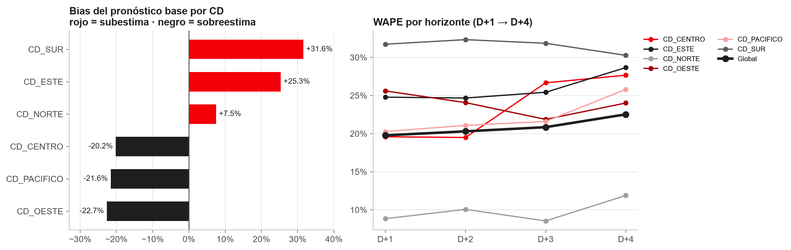
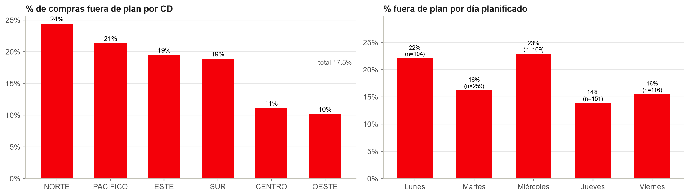
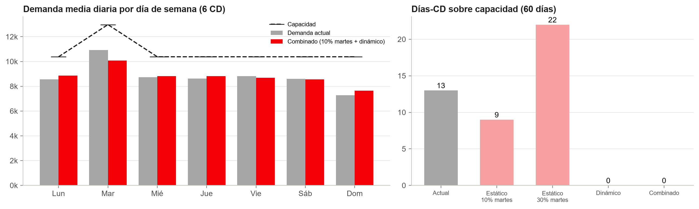
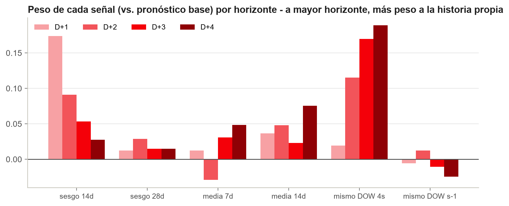
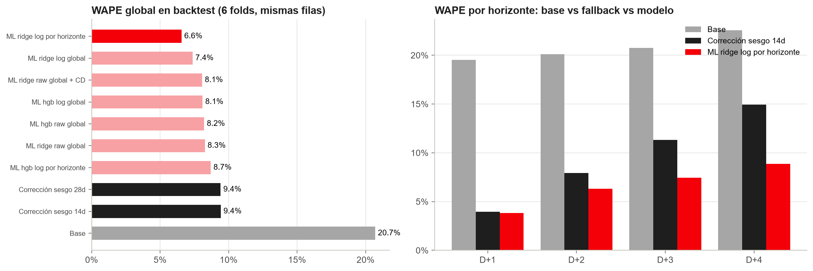
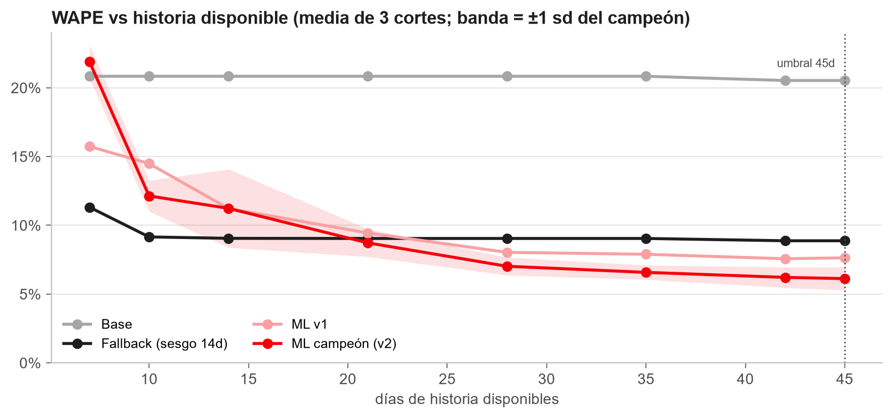
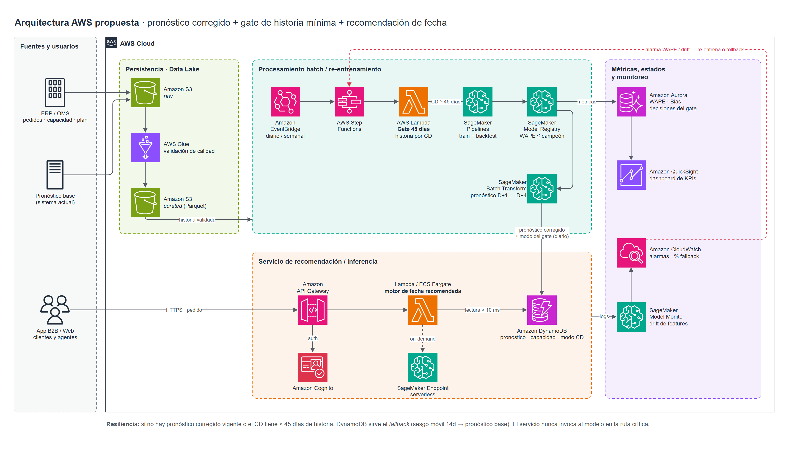

Desafío técnico · Data Scientist Lead · Optimización logística
6 CD × 60 días · 1,380 pronósticos D+1…D+4. El bias global (+6.5%) engaña: sesgos de signo opuesto se compensan.

Tarea 1 · Hallazgos por CD y horizonte
| CD | Bias | WAPE | Diagnóstico |
|---|---|---|---|
| SUR | +31.6% | 31.6% | Subestima |
| ESTE | +25.3% | 25.9% | Subestima |
| NORTE | +7.5% | 9.8% | Subestima (leve) |
| CENTRO | −20.2% | 23.3% | Sobreestima |
| PACÍFICO | −21.6% | 22.2% | Sobreestima |
| OESTE | −22.7% | 23.9% | Sobreestima |
Bias > 0 = subestimación. El signo se mantiene en el 100% de las semanas en los 6 CD.
WAPE global D+1 → D+4
19.8% → 22.5%
+2.8 pp; el salto principal ocurre en D+4. Incluso en D+1 el error es ~20%: el problema es el nivel, no la anticipación.
CENTRO (+8 pp) y PACÍFICO (+6 pp) empeoran con el horizonte; en SUR y OESTE el error casi no cambia porque es sesgo puro.
Es el CD más preciso, pero tiene 6 de los 13 días-CD sobre capacidad.
Tarea 2 · Estado del plan de entrega
+10.6%
bias de volumen: el plan subestima la compra real (real ≈ 1.12× plan) en los 6 CD y los 3 canales
17.5%
de las compras sale de fecha (129 de 739); los atrasos son 3.5× más frecuentes que los adelantos
60%
de las compras fuera de plan termina en martes (77 de 129): el pico se auto-refuerza

Tarea 2 · Estrategia de aplanamiento

Al tomar el pedido: utilización proyectada por slot = pronóstico corregido / capacidad. Se recomienda la fecha con holgura (±2 días), con incentivo si el slot elegido supera 90%.
Dinámico: 13 → 0 días-CD sobre capacidad moviendo 1.6% del volumen. Mover un 30% fijo del martes crea 22. Piloto con los 59 clientes flexibles.
Días-CD sobre capacidad, pico/promedio (hoy 1.24), CV diario, aceptación de la fecha recomendada. Guardarraíl: OTIF y volumen por cliente.
Tarea 3 · Metodología del modelo complementario
log(real / base), con un Ridge por horizonte, global para los 6 CD y sin ID de CD: transferible a centros nuevos.
Día de semana, martes y día pico, índice estacional, medias móviles 7/14d, mismo día 4 semanas, sesgo móvil 14/28d; todo relativo al base, en log.
Backtest rolling-origin semanal (6 folds), re-entrenando en cada origen, mismas filas para todos los modelos y bootstrap por semanas.

A mayor horizonte, más peso a la historia propia: en D+1 manda el sesgo reciente; en D+4, el patrón del mismo día de semana.
Iteración documentada: v1 (features en niveles, modelo global) → v2 (log-relativas, por horizonte).
Tarea 3 · Resultados del backtest

mejor que el base y que el fallback
en todos los CD (base: −22% a +31%)
IC95% [−3.4, −2.2]; sobre todo en D+3/D+4
Tarea 4 · Resiliencia: gate de historia mínima

Simulación: todos los CD truncados a L días; media de 3 fechas de corte.
≥ 45 días continuos: modelo. Si no: sesgo móvil 14d o, sin historia, base. Nunca lanza excepción (probado con CD nuevo, huecos y datos corruptos).
Bajo 21 días el modelo es peor que el fallback. Mejora hasta 45d: 7.0% (28d) → 6.1% (45d), con menos varianza.
45 días por defecto, configurable por CD; entre 28 y 45 días, el modelo corre en shadow mode.
Tarea 5 · Arquitectura e infraestructura en AWS

Step Functions orquesta gate, entrenamiento y backtest en SageMaker; solo promueve modelos que le ganan al campeón.
API Gateway + Lambda leen DynamoDB en milisegundos; el modelo no está en la ruta crítica.
S3 para datos, Aurora para métricas y decisiones del gate, CloudWatch para alarmas.
Impacto en negocio y KPIs
−79%
unidades en flete de emergencia (45.4k → 9.7k)
86 → 97%
demanda cubierta con flota reservada
25 → 5
camiones de emergencia por semana*
13 → 0
días-CD sobre capacidad (slotting)
| Ámbito | KPI | Meta indicativa |
|---|---|---|
| Pronóstico | WAPE y Bias por CD × horizonte, semanal | WAPE < 8%, Bias ±3% |
| Flota | % unidades en emergencia · utilización de flota reservada | −50% vs hoy · > 90% |
| Curva de demanda | Días-CD sobre capacidad · pico/promedio semanal | 0 días · < 1.15 |
| Servicio | OTIF · aceptación de la fecha recomendada | OTIF > 95% |
| Operación ML | % de CD en fallback · drift · latencia p95 | alarmas en CloudWatch |